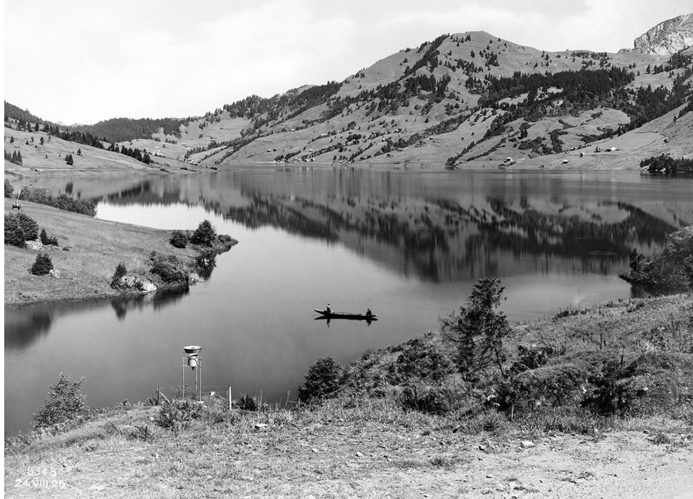

Das Tal erscheint als empfindlicher Natur- und Lebensraum, der von äusseren Eingriffen und übergeordneten Entscheidungen abhängig ist.
Synonyme: verletzlich / bedroht; abhängig / ausgeliefert
Der Beginn ist von einer ruhigen, zugleich angespannten und vorahnungsvollen Stimmung geprägt.
Synonyme: Spannung / Erwartung; Unsicherheit / latente Angst